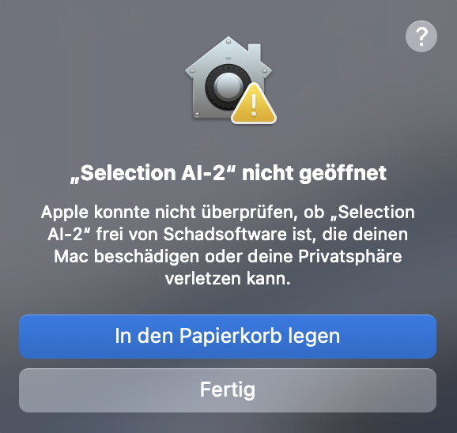
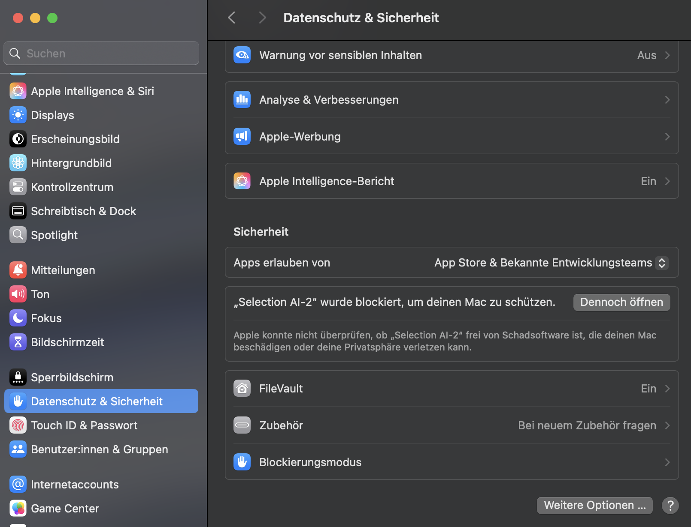

macOS
Für Macs mit Apple Chip, M1 oder neuer
Desktop-App
Installiere die Beta, melde dich mit deinem Selection-AI-Konto an und nutze dieselben Chats, Tools und Einstellungen auf deinen Geräten.
Für Macs mit Apple Chip, M1 oder neuer
Für Windows 10 und 11 mit 64 Bit
Erster Start auf macOS
Wenn der Hinweis erscheint: erst „Fertig“, dann in den Systemeinstellungen „Dennoch öffnen“ wählen.


Hier öffnenDanach: Selection AI lässt sich normal starten. Die Freigabe ist nur einmal pro App-Version nötig.
Erster Start unter Windows
Windows prüft bei neuen Downloads die Reputation der Datei. Bei der ersten Ausführung kann deshalb eine SmartScreen-Meldung erscheinen.
Windows hat den PC geschützt
Microsoft Defender SmartScreen hat den Start einer unbekannten App verhindert.Entpacke die ZIP-Datei vollständig und öffne den Ordner Selection AI-win32-x64.
Erscheint SmartScreen, klicke zuerst auf Weitere Informationen.
Wähle anschließend Trotzdem ausführen. Danach kannst du Selection AI normal starten.
Hinweis: Bei neuen, nicht signierten Versionen kann Windows erneut nachfragen. Lade Selection AI ausschließlich über wakritech.com herunter.
Der kostenlose Tarif umfasst bis zu 50 KI-Anfragen pro Monat und benötigt keinen eigenen API-Schlüssel.